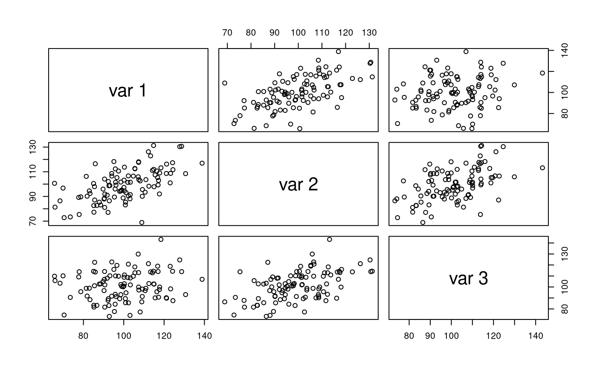
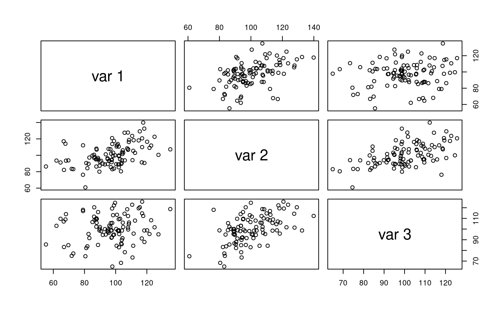
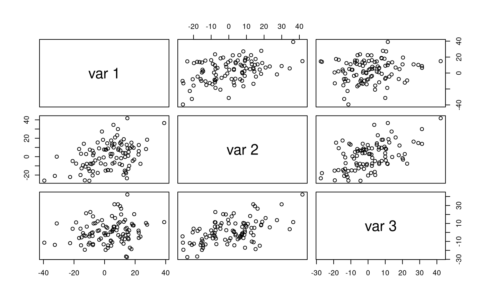

vignettes/examples/examples_mvnram.Rmd
examples_mvnram.Rmdlibrary(jeksterslabRdata)
See mvnram() for more details.
mu
Set matrices.
mu <- c(100, 100, 100) A <- matrix( data = c(0, sqrt(0.26), 0, 0, 0, sqrt(0.26), 0, 0, 0), ncol = 3 ) S <- diag(c(225, 166.5, 116.5)) F <- I <- diag(3)
Run the function.
X <- mvnram(n = 100, mu = mu, A = A, S = S, F = F, I = I)
Explore the output.
str(X) #> num [1:100, 1:3] 80.4 101.6 116.8 120.9 99.2 ... #> - attr(*, "dimnames")=List of 2 #> ..$ : NULL #> ..$ : NULL psych::pairs.panels(X)

colMeans(X) #> [1] 101.5588 100.5292 100.9287 cov(X) #> [,1] [,2] [,3] #> [1,] 220.02750 106.69085 57.83955 #> [2,] 106.69085 226.18857 88.82362 #> [3,] 57.83955 88.82362 178.60002 cor(X) #> [,1] [,2] [,3] #> [1,] 1.0000000 0.4782482 0.2917734 #> [2,] 0.4782482 1.0000000 0.4419289 #> [3,] 0.2917734 0.4419289 1.0000000
Run the function.
Xstar <- mvnram(n = 100, mu = mu, A = A, S = S, F = F, I = I, R = 100)
Explore the output.
str(Xstar, list.len = 6) #> List of 100 #> $ : num [1:100, 1:3] 111.1 119.5 93.2 98 109.2 ... #> ..- attr(*, "dimnames")=List of 2 #> .. ..$ : NULL #> .. ..$ : NULL #> $ : num [1:100, 1:3] 98 111.6 99.9 99.6 102.3 ... #> ..- attr(*, "dimnames")=List of 2 #> .. ..$ : NULL #> .. ..$ : NULL #> $ : num [1:100, 1:3] 111 102.8 99.6 122.2 98.1 ... #> ..- attr(*, "dimnames")=List of 2 #> .. ..$ : NULL #> .. ..$ : NULL #> $ : num [1:100, 1:3] 111.6 111.1 96.3 84.7 98.2 ... #> ..- attr(*, "dimnames")=List of 2 #> .. ..$ : NULL #> .. ..$ : NULL #> $ : num [1:100, 1:3] 111 105 121 105 121 ... #> ..- attr(*, "dimnames")=List of 2 #> .. ..$ : NULL #> .. ..$ : NULL #> $ : num [1:100, 1:3] 99.7 107.5 89.9 96.2 94.3 ... #> ..- attr(*, "dimnames")=List of 2 #> .. ..$ : NULL #> .. ..$ : NULL #> [list output truncated]
M
Set matrices.
M <- c(100, 50, 50) A <- matrix( data = c(0, sqrt(0.26), 0, 0, 0, sqrt(0.26), 0, 0, 0), ncol = 3 ) S <- diag(c(225, 166.5, 116.5)) F <- I <- diag(3)
Run the function.
X <- mvnram(n = 100, M = M, A = A, S = S, F = F, I = I) #> mu = NULL. mu is computed using M.
Explore the output.
str(X) #> num [1:100, 1:3] 88 96.2 104.5 96.1 124.8 ... #> - attr(*, "dimnames")=List of 2 #> ..$ : NULL #> ..$ : NULL psych::pairs.panels(X)

colMeans(X) #> [1] 102.2017 103.6539 105.1781 cov(X) #> [,1] [,2] [,3] #> [1,] 183.13631 82.13312 19.27522 #> [2,] 82.13312 203.64548 89.95014 #> [3,] 19.27522 89.95014 165.80071 cor(X) #> [,1] [,2] [,3] #> [1,] 1.0000000 0.4252983 0.1106163 #> [2,] 0.4252983 1.0000000 0.4895209 #> [3,] 0.1106163 0.4895209 1.0000000
Run the function.
Xstar <- mvnram(n = 100, M = M, A = A, S = S, F = F, I = I, R = 100) #> mu = NULL. mu is computed using M.
Explore the output.
str(Xstar, list.len = 6) #> List of 100 #> $ : num [1:100, 1:3] 111.3 76.8 99.4 104.8 99.5 ... #> ..- attr(*, "dimnames")=List of 2 #> .. ..$ : NULL #> .. ..$ : NULL #> $ : num [1:100, 1:3] 88.2 95.3 89.2 107.3 131 ... #> ..- attr(*, "dimnames")=List of 2 #> .. ..$ : NULL #> .. ..$ : NULL #> $ : num [1:100, 1:3] 100.7 93.2 101.3 111.3 84.2 ... #> ..- attr(*, "dimnames")=List of 2 #> .. ..$ : NULL #> .. ..$ : NULL #> $ : num [1:100, 1:3] 109.3 89.7 99.7 77.9 78.7 ... #> ..- attr(*, "dimnames")=List of 2 #> .. ..$ : NULL #> .. ..$ : NULL #> $ : num [1:100, 1:3] 70.2 92.1 82.1 95.4 106.1 ... #> ..- attr(*, "dimnames")=List of 2 #> .. ..$ : NULL #> .. ..$ : NULL #> $ : num [1:100, 1:3] 112.5 92.7 94.1 113.6 104.8 ... #> ..- attr(*, "dimnames")=List of 2 #> .. ..$ : NULL #> .. ..$ : NULL #> [list output truncated]
mu = NULL and M = NULL
Set matrices.
A <- matrix( data = c(0, sqrt(0.26), 0, 0, 0, sqrt(0.26), 0, 0, 0), ncol = 3 ) S <- diag(c(225, 166.5, 116.5)) F <- I <- diag(3)
Run the function.
X <- mvnram(n = 100, A = A, S = S, F = F, I = I) #> mu = NULL and M = NULL. mu is set to a vector of zeroes of length 3.
Explore the output.
str(X) #> num [1:100, 1:3] -10.09 -7.86 -3.31 15.5 -3.55 ... #> - attr(*, "dimnames")=List of 2 #> ..$ : NULL #> ..$ : NULL psych::pairs.panels(X)

colMeans(X) #> [1] 1.893097 3.116580 2.461621 cov(X) #> [,1] [,2] [,3] #> [1,] 210.34649 106.3736 39.46059 #> [2,] 106.37362 221.2729 114.30993 #> [3,] 39.46059 114.3099 188.50234 cor(X) #> [,1] [,2] [,3] #> [1,] 1.0000000 0.4930627 0.1981698 #> [2,] 0.4930627 1.0000000 0.5597079 #> [3,] 0.1981698 0.5597079 1.0000000
Run the function.
Xstar <- mvnram(n = 100, A = A, S = S, F = F, I = I, R = 100) #> mu = NULL and M = NULL. mu is set to a vector of zeroes of length 3.
Explore the output.
str(Xstar, list.len = 6) #> List of 100 #> $ : num [1:100, 1:3] 13.3 17.3 26.4 21.5 18.9 ... #> ..- attr(*, "dimnames")=List of 2 #> .. ..$ : NULL #> .. ..$ : NULL #> $ : num [1:100, 1:3] -15.63 -10.025 -12.703 2.306 -0.689 ... #> ..- attr(*, "dimnames")=List of 2 #> .. ..$ : NULL #> .. ..$ : NULL #> $ : num [1:100, 1:3] 14.62 -19.77 7.57 -6.62 -36.92 ... #> ..- attr(*, "dimnames")=List of 2 #> .. ..$ : NULL #> .. ..$ : NULL #> $ : num [1:100, 1:3] 3.31 -2.76 -14.33 -4 5.8 ... #> ..- attr(*, "dimnames")=List of 2 #> .. ..$ : NULL #> .. ..$ : NULL #> $ : num [1:100, 1:3] 39.49 -24.82 6.21 14.49 -43.08 ... #> ..- attr(*, "dimnames")=List of 2 #> .. ..$ : NULL #> .. ..$ : NULL #> $ : num [1:100, 1:3] -1.72 -8.13 15.44 -11.74 -23.15 ... #> ..- attr(*, "dimnames")=List of 2 #> .. ..$ : NULL #> .. ..$ : NULL #> [list output truncated]